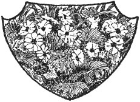

Pagi-pagi sekali keesokan harinya, dokter itu mendaki gunung bersama Peter dan kambing-kambingnya. Pria ramah itu beberapa kali mencoba memulai percakapan dengan anak laki-laki itu, tetapi sebagai jawaban atas pertanyaannya, ia hanya mendapatkan kata-kata satu suku kata. Ketika mereka sampai di puncak, mereka mendapati Heidi sudah menunggu, segar dan merona seperti fajar menyingsing.
"Apakah kamu ikut?" tanya Peter seperti biasa.
"Tentu saja aku mau, kalau dokter ikut bersama kita," jawab anak itu.
Sang kakek, keluar dari gubuk, menyapa pendatang baru itu dengan penuh hormat. Kemudian dia menghampiri Peter, dan menyampirkan karung di bahunya, yang tampaknya berisi lebih banyak barang dari biasanya pada hari itu.
Saat mereka memulai perjalanan, Heidi terus mendesak kambing-kambing yang berkerumun di sekelilingnya. Ketika akhirnya ia berjalan dengan tenang di samping dokter, ia mulai menceritakan banyak hal tentang kambing-kambing itu dan semua kenakalan aneh mereka, serta tentang bunga, batu, dan burung yang mereka lihat. Ketika mereka tiba di tujuan, waktu terasa berlalu begitu cepat. Sepanjang waktu Peter terus melirik marah ke arah dokter yang tidak sadarkan diri itu, yang bahkan tidak menyadarinya.
Heidi kemudian mengajak dokter itu ke tempat favoritnya. Dari sana mereka bisa mendengar suara lonceng sapi yang sedang merumput di bawah. Langit berwarna biru tua, dan di atas kepala mereka seekor elang berputar-putar dengan sayap terbentang. Semuanya tampak bercahaya dan terang di sekitar mereka, tetapi dokter itu tetap diam. Tiba-tiba mendongak, ia melihat mata Heidi yang berseri-seri.
"Heidi, tempat ini indah sekali," katanya. "Tapi bagaimana mungkin seseorang dengan hati yang berat dapat menikmati keindahan ini? Katakan padaku!"
"Oh," seru Heidi, " di sini orang tidak pernah merasa sedih. Orang hanya merasa tidak bahagia di Frankfurt."
Senyum tipis terlintas di wajah dokter itu. Kemudian dia memulai: "Tetapi jika seseorang telah membawa kesedihannya pergi bersamanya, bagaimana Anda akan menghiburnya?"
"Hanya Tuhan di Surga yang dapat menolongnya."
"Memang benar, Nak," ujar dokter itu. "Tetapi apa yang bisa kita lakukan ketika Tuhan sendiri yang mengirimkan penderitaan ini kepada kita?"
Setelah merenung sejenak, Heidi menjawab: "Kita harus bersabar, karena Tuhan tahu bagaimana mengubah hal-hal yang paling menyedihkan menjadi sesuatu yang membahagiakan pada akhirnya. Tuhan akan menunjukkan kepada kita apa yang telah Ia rencanakan untuk kita. Tetapi Ia hanya akan melakukannya jika kita berdoa kepada-Nya dengan sabar."
"Kuharap kau akan selalu mempertahankan keyakinan indah ini, Heidi," kata dokter itu. Kemudian sambil memandang tebing-tebing megah di atas, ia melanjutkan: "Bayangkan betapa sedihnya kita jika tidak bisa melihat semua hal indah ini. Bukankah itu akan membuat kita dua kali lebih sedih? Bisakah kau mengerti aku, Nak?"
Rasa sakit yang hebat menusuk dada Heidi. Ia harus memikirkan neneknya yang malang. Kebutaan neneknya selalu menjadi kesedihan besar bagi anak itu, dan ia kembali mengalaminya. Dengan serius ia menjawab:
"Oh ya, aku bisa memahaminya. Tapi kita bisa membaca lagu-lagu nenek; lagu-lagu itu membuat kita bahagia dan ceria kembali."
"Lagu yang mana, Heidi?"
"Oh, puisi tentang matahari, dan tentang taman yang indah, dan kemudian bait-bait terakhir dari puisi yang panjang itu. Nenek sangat menyukainya sehingga aku selalu harus membacanya tiga kali," kata Heidi.
"Aku harap kau mau mengatakannya padaku, Nak, karena aku ingin mendengarnya," kata dokter itu.
Heidi, sambil melipat tangannya, mulai melantunkan syair-syair penghiburan. Namun, ia tiba-tiba berhenti karena dokter itu tampaknya tidak mendengarkan. Ia duduk tak bergerak, menutupi matanya dengan tangan. Karena mengira dokter itu tertidur, Heidi tetap diam. Tetapi syair-syair itu mengingatkannya pada masa kecilnya; ia seolah mendengar suara ibunya dan melihat mata ibunya yang penuh kasih sayang, karena ketika ia masih kecil, ibunya pernah menyanyikan lagu ini untuknya. Ia duduk di sana cukup lama, sampai ia menyadari bahwa Heidi sedang memperhatikannya.
"Heidi, lagumu indah sekali," katanya dengan suara yang lebih riang. "Kita harus datang ke sini lagi di lain hari, dan kau bisa menyanyikannya lagi untukku."
Selama waktu itu Peter terus-menerus diliputi amarah. Sekarang Heidi telah kembali ke padang rumput bersamanya, dia tidak melakukan apa pun selain berbicara dengan pria tua itu. Hal itu membuatnya sangat marah karena dia bahkan tidak bisa mendekatinya. Berdiri agak jauh di belakang teman Heidi, dia mengepalkan tinjunya ke arahnya, dan tak lama kemudian kedua tinjunya, akhirnya mengangkatnya ke langit, sementara Heidi dan dokter itu tetap bersama.
Ketika matahari berada di puncaknya dan Petrus tahu bahwa saat itu tengah hari, ia berseru kepada mereka dengan sekuat tenaga: "Waktunya makan."
Ketika Heidi hendak mengambil makan malam mereka, dokter hanya meminta segelas susu, karena hanya itu yang dia inginkan. Anak itu juga memutuskan untuk menjadikan susu sebagai satu-satunya makanannya, berlari ke arah Peter dan memberitahunya tentang keputusan mereka.
Ketika anak laki-laki itu menyadari bahwa seluruh isi tas itu miliknya, ia bergegas menyelesaikan tugasnya lebih cepat dari sebelumnya. Namun, ia merasa bersalah karena kemarahannya sebelumnya terhadap pria baik hati itu. Untuk menunjukkan penyesalannya, ia mengangkat kedua tangannya ke langit, menandakan bahwa kepalan tangannya tidak berarti apa-apa lagi . Baru setelah itu ia mulai menikmati hidangannya.
Heidi dan dokter itu berjalan-jalan di padang rumput sampai pria itu merasa perlu pergi. Ia ingin Heidi tetap di tempatnya, tetapi Heidi bersikeras untuk menemaninya. Sepanjang jalan, ia menunjukkan kepadanya banyak tempat di mana bunga-bunga gunung yang indah tumbuh, dan ia dapat menyebutkan semua nama bunga tersebut. Ketika mereka akhirnya berpisah, Heidi melambaikan tangan kepadanya. Dari waktu ke waktu ia menoleh, dan melihat anak itu masih berdiri di sana, ia teringat akan putrinya sendiri yang biasa melambaikan tangan kepadanya seperti itu ketika ia pergi dari rumah.
Cuaca bulan itu hangat dan cerah. Setiap pagi dokter datang ke Alpen, sering menghabiskan harinya bersama lelaki tua itu. Mereka sering mendaki bersama hingga ke tebing terjal di dekat sarang elang. Sang paman akan menunjukkan kepada tamunya semua tumbuhan yang tumbuh di tempat tersembunyi dan memiliki khasiat penguat dan penyembuhan. Ia bisa menceritakan banyak hal aneh tentang binatang-binatang yang hidup di lubang-lubang di batu atau tanah, atau di puncak-puncak pohon yang tinggi.
Di malam hari mereka akan berpisah, dan dokter akan berseru: "Sahabatku, aku tidak pernah meninggalkanmu tanpa memberimu pelajaran."
Namun sebagian besar harinya dihabiskan bersama Heidi. Kemudian keduanya akan duduk bersama di tempat favorit anak itu, dan Peter, yang tampak pendiam, duduk di belakang mereka. Heidi harus membacakan ayat-ayat suci, seperti yang telah dilakukannya pada hari pertama, dan menghiburnya dengan semua hal yang diketahuinya.
Akhirnya bulan September yang indah telah berakhir. Suatu pagi dokter datang dengan wajah yang lebih sedih dari biasanya. Waktunya telah tiba baginya untuk kembali ke Frankfurt, dan pamannya sangat sedih mendengar kabar itu. Heidi sendiri hampir tidak percaya bahwa sahabatnya yang tercinta, yang telah ia temui setiap hari, benar-benar akan pergi. Dokter sendiri enggan pergi, karena Alpen telah menjadi seperti rumah baginya. Tetapi ia harus pergi, dan sambil berjabat tangan dengan kakeknya, ia mengucapkan selamat tinggal, Heidi mengikutinya sedikit.
Bergandengan tangan mereka berjalan turun, hingga dokter itu berhenti. Kemudian sambil mengelus rambut keriting Heidi, ia berkata: "Sekarang aku harus pergi, Heidi! Aku berharap bisa membawamu bersamaku ke Frankfurt; maka aku bisa menjagamu."
Mendengar kata-kata itu, semua deretan rumah dan jalanan, Nona Rottenmeier dan Tinette, muncul di hadapan Heidi. Dengan sedikit ragu, dia berkata: "Saya akan lebih senang jika Anda mau datang mengunjungi kami lagi."
"Saya yakin itu akan lebih baik. Sekarang, selamat tinggal!" kata pria ramah itu. Saat mereka berjabat tangan , matanya berkaca-kaca. Dengan cepat ia berbalik dan bergegas pergi.
Heidi, berdiri di tempat yang sama, menatapnya. Betapa baiknya matanya! Tetapi matanya tadi penuh air mata. Tiba-tiba ia mulai menangis tersedu-sedu, dan berlari mengejar temannya, memanggil sekuat tenaga, tetapi terhenti oleh isak tangisnya:
"Oh dokter, dokter!"
Sambil melihat sekeliling, ia berdiri diam dan menunggu hingga anak itu sampai di dekatnya. Air mata mengalir di pipinya saat ia terisak: "Aku akan ikut denganmu ke Frankfurt dan aku akan tinggal selama yang kau inginkan. Tapi pertama-tama aku harus menemui kakek."
"Tidak, tidak, anakku sayang," katanya penuh kasih sayang, "jangan langsung. Kau harus tetap di sini, Ibu tidak ingin kau sakit lagi. Tetapi jika Ibu sakit dan kesepian dan memintamu datang kepadaku, maukah kau datang dan tinggal bersamaku? Dapatkah aku pergi dan berpikir bahwa masih ada seseorang di dunia ini yang peduli dan mencintaiku?"
"Ya, aku akan datang kepadamu di hari yang sama, karena aku sangat menyayangimu seperti aku menyayangi kakek," Heidi meyakinkannya sambil menangis sepanjang waktu.
Setelah berjabat tangan lagi, mereka berpisah. Heidi tetap di tempat yang sama, melambaikan tangannya dan memperhatikan temannya yang pergi hingga ia tampak tak lebih besar dari titik kecil. Kemudian ia menoleh ke belakang untuk terakhir kalinya ke arah Heidi dan Pegunungan Alpen yang cerah, bergumam pada dirinya sendiri: "Indah sekali di atas sana. Tubuh dan jiwa menjadi lebih kuat di tempat itu dan hidup terasa layak dijalani lagi."
